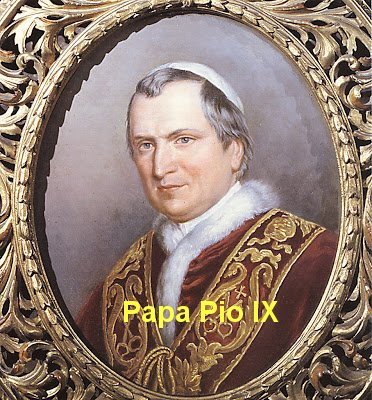
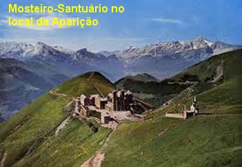
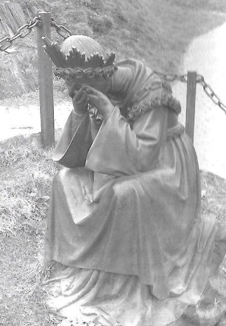

APÓSTOLOS DOS ÚLTIMOS TEMPOS
Após descrever
as linhas mestras dos fatos que acontecerão até o encerramento da história da
humanidade, NOSSA SENHORA introduziu um elemento 
13 - “Eu dirijo um premente apelo a Terra. Apelo aos verdadeiros discípulos do DEUS Vivo que reina nos Céus. Apelo aos verdadeiros imitadores de JESUS CRISTO feito homem, o único e verdadeiro Salvador dos homens. Apelo aos MEUS filhos, MEUS verdadeiros devotos, aqueles que a MIM foi dado, para que EU os conduza a MEU DIVINO FILHO, aqueles os quais, levo por assim dizer nos MEUS Braços, que vivem de MEU Espírito”.
“Enfim, apelo aos APÓSTOLOS DOS ÚLTIMOS TEMPOS, aos fiéis discípulos de JESUS CRISTO, que viveram no desprezo do mundo e de si próprios, na pobreza e na humildade, na simplicidade e no silêncio, na oração e na mortificação, na castidade e na união com DEUS, no sofrimento e desconhecidos do mundo”.
“É chegado o tempo para que eles saiam e venham iluminar a Terra. Ide e mostrai-vos como MEUS filhos amados. Estou convosco e em vós, contanto que vossa fé seja a luz que vos ilumina nestes dias de desgraças. Que vosso zelo vos faça como que famintos da glória e honra de JESUS CRISTO. Combatei filhos da luz, pequeno número que isto vede, pois aí está o Tempo dos tempos, o Fim dos fins”.
13 (Explicação) – Quem serão estes APÓSTOLOS DOS ÚLTIMOS TEMPOS?
São Luís Maria Grignion de Montfort no seu “Tratado da Verdadeira Devoção à SANTÍSSIMA VIRGEM MARIA”, descreve de maneira brilhante os verdadeiros Apóstolos dos Últimos Tempos. E aconteceu que ele morrendo em 1716, o manuscrito da sua obra ficou esquecido e desapareceu. Por incrível que possa parecer, o próprio Santo previu que isto ia ocorrer. E o desaparecimento durou quase um século. Foi encontrado no dia 22 de Abril de 1842, quando era reunido o material referente à sua vida e obra, para o processo de Beatificação. Então, o “Tratado da Devoção” foi editado pela primeira vez em 1843, ou seja, apenas três anos antes da Aparição da VIRGEM em La Salette. Assim, a recuperação e publicação do referido Tratado de Montfort, foi um acontecimento que convergiu providencialmente para explicar na revelação que NOSSA SENHORA fez em La Salette, o assunto sobre os Apóstolos dos Últimos Tempos.
Mélanie foi quem mais se interessou em saber sobre eles. Inclusive, NOSSA SENHORA propiciou-lhe uma visão sobre os referidos Apóstolos, e também, ditou uma “regra” para ser seguida por eles. A jovem pastora completou: “Eu vi e compreendi que o bom DEUS quer que seja uma Ordem Religiosa que lute contra os abusos que levaram à decadência do clero e do estado religioso e à ruína da civilização cristã”.
A VIRGEM MARIA prosseguiu relatando a parte final do SEGREDO:
14 – “A Igreja será eclipsada, o mundo estará na consternação. Mas eis que virão Enoc e Elias cheios do ESPÍRITO DE DEUS. Eles pregarão com a força de DEUS, os homens de boa vontade acreditarão em DEUS e muitas almas serão consoladas. Eles farão grandes progressos, pela virtude do ESPÍRITO SANTO, e condenarão os erros diabólicos do Anticristo. Ai dos habitantes da Terra! Haverá guerras sangrentas e fome, peste e doenças contagiosas. Haverá chuvas feitas de saraivadas espantosas de animais, trovoadas que abalarão as cidades, terremotos que engolirão países. Ouvir-se-ão vozes pelos ares. Os homens baterão as cabeças contra as paredes. Pedirão a morte, e por outro lado a morte será seu suplício. O sangue correrá de todo lado”.
“Quem poderá resistir se DEUS não diminuir o tempo da prova? DEUS se deixará dobrar pelo sangue, lágrimas e orações dos justos. Enoc e Elias serão mortos. Roma pagã desaparecerá. O fogo do Céu cairá e consumirá três cidades. Todo o universo será tomado de terror, e muitos se deixarão seduzir, porque não adoraram o verdadeiro CRISTO Vivo entre eles. Chegou à hora, o sol se obscurece só a fé viverá”.
“Chegou o tempo, o abismo se abre. Eis o rei dos reis das trevas, eis a Besta com seus súditos, dizendo ser o salvador do mundo. Ele se elevará orgulhosamente nos ares para ir até o Céu. Será asfixiado pelo sopro de São Miguel Arcanjo. Cairá. E a Terra, que durante três dias terá estado em contínuas evoluções, abrirá seu seio cheio de fogo. Ele (a Besta) será submerso para sempre, com todos os seus asseclas, nos despenhadeiros eternos do inferno. Então a água e o fogo purificarão a Terra e consumirão todas as obras do orgulho dos homens, e tudo será renovado. DEUS será servido e glorificado”.

No Livro do Apocalipse, nos capítulos 19 e 20 encontramos outras verdades: São os Cantos de triunfo no Céu com louvores a DEUS e o Extermínio das Nações Pagãs. Apenas resta uma referência aos três dias de trevas contínuas, com a terra fora dos eixos. E eles, os “Três dias de Trevas” serão o ponto final de todo o terror humano. Quem passar deles terá chegado ao Novo Reino.
A respeito dos três dias de trevas (ou seja, 72 horas) NOSSA SENHORA disse: E a Terra, que durante três dias terá estado em contínuas evoluções”... (texto grifado acima)
Explicação: Mesmo com a terrível guerra, mesmo com todas as doenças que se espalharão pelo mundo, mesmo com todos os terremotos, cataclismos e desastres, restarão ainda alguns “MAUS” sobre a terra. DEUS então permitirá que os demônios os levem de corpo e alma ao inferno. Durante este tempo os demônios aparecerão para as pessoas tais como eles são e matarão á muitos com as próprias mãos. Serão 72 horas de trevas espessas durante as quais um asteróide se chocará com a Terra, caindo no mar, provavelmente no Atlântico Norte (Ap 8,8), e isto acontecerá ao toque da Segunda Trombeta do Anjo do SENHOR. Esta ocorrência provocará um terrível terremoto (Is 24, 19-20) e imensos maremotos com ondas gigantescas que poderão atingir alturas incalculáveis e que percorrerão a terra em velocidades impressionantes. Isso levará à destruição a grande parte das cidades litorâneas do Atlântico e mesmo, em largas faixas de terra que serão literalmente varridas do mapa, matando muita gente. Só os que estiverem rezando dentro das suas casas, e não abrirem as portas para ninguém terá alguma chance de escapar vivo. Apenas velas bentas iluminarão as casas, pois faltará todo tipo de energia. Passada àquelas 72 horas surgirá um sol brilhante e o mundo amanhecerá no Novo Reino. Apenas uns poucos restarão e a terra parecerá transformada num deserto. Mas as pessoas ai viverão na graça e na presença de DEUS, que “estará no meio deles”, da mesma maneira como “ELE está no Paraíso junto dos bem-aventurados”. Os dias que se seguirem estão maravilhosamente descritos em Isaías 65, 23-25.
Termina aqui o SEGREDO que NOSSA SENHORA transmitiu em La Salette.


Acrescentamos a seguir algumas informações complementares:
UM GIGANTESCO ASTERÓIDE

Imagina-se que aquela frase da VIRGEM MARIA: “E a Terra, que durante três dias terá estado em contínuas evoluções”, ELA estava se referindo a realidade de um asteróide incandescente, de grandes dimensões, que cairá no oceano. A terra estremecerá e perderá momentaneamente o equilíbrio. Provocará uma grande nuvem de vapor, que interferirá na luz solar por 72 horas (ou seja, durante 3 dias de trevas). Também provocará ondas gigantescas que invadirão muitas regiões, mudando o aspecto geográfico da Terra.
TRÊS DIAS DE TREVAS
Para confirmar esta possibilidade, existe o depoimento do Padre Franciscano, Frei David López, que participando da Aparição de NOSSA SENHORA em Mediugórie, na pequena sala ao lado da Sacristia da Igreja de São Tiago, no dia 14 de Agosto de 1987, ouviu extasiado o anúncio da MÃE DE DEUS:
"Não temas pelos três dias de trevas que virão sobre a Terra. Os que procuram viver Minhas Mensagens e levam uma vida de oração serão alertados por uma voz interior, com antecedência, antes do acontecimento. Estarei com vocês na hora da aflição. Deve cultivar uma devoção especial ao SAGRADO CORAÇÃO DE JESUS. Caminhem na paz de DEUS”.
EXPLICAÇÃO
Durante os dias de trevas não haverá mais demônios no Inferno, eles estarão na Terra. Serão 72 horas de escuridão. Esses dias serão tão escuros que ninguém conseguirá enxergar as próprias mãos. Os que não estiverem em estado de graça morrerão de susto, ao se verem assediados por demônios horríveis, e até mesmo morrerão de loucura. Deverão manter fechadas as portas e janelas das casas e não atender ninguém que os chamem de fora.
A maior tentação será dos demônios, que imitarão as vozes das pessoas que amamos. Mas, não se deixem enganar pelas vozes, porque não são os seus entes queridos, e sim as vozes dos demônios tentando fazê-los sair de casa. DEUS já escolheu as pessoas que serão martirizadas no começo dos dias de trevas. Elas não devem se assustar, porque DEUS lhes dará a graça da perseverança e, depois do martírio, os Anjos as transportarão para o Céu.
Esta mesma descrição, inclusive com o depoimento de Frei David López, foi feita pelo Padre Alberto Herbert no seu livro: “Os Três Dias de Trevas: Profecias de Santos e Videntes”.